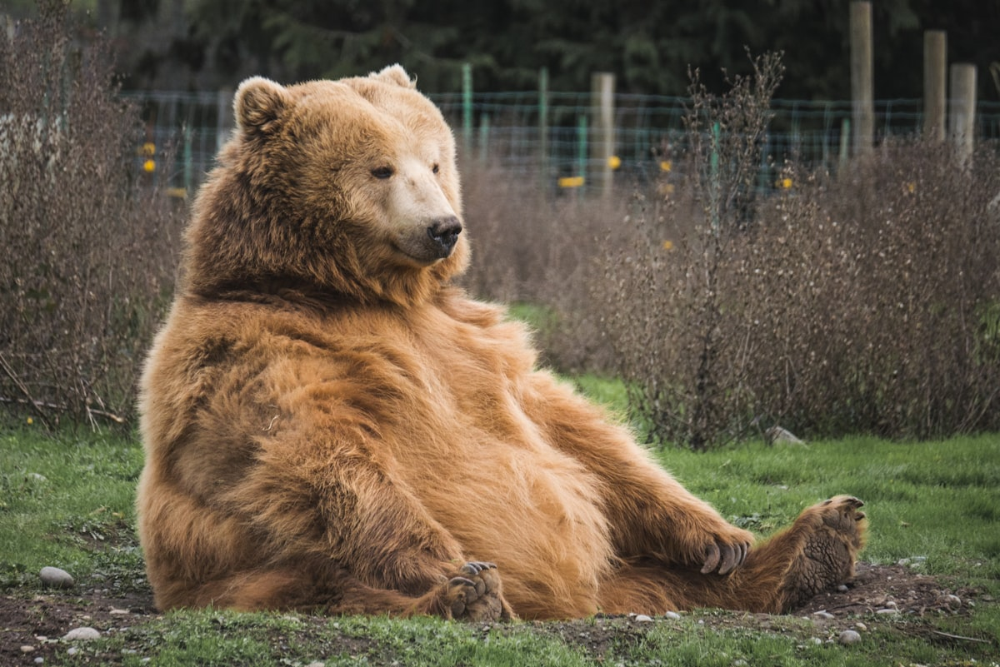

Saddle Stitching
The Art of Two-Needle Saddle Stitching: Point Sellier & Waxed Linen Thread
Point Sellier mechanics, Lin Câblé beeswax preparation, 45° pricking iron angles, and lockstitch vs saddle stitch tensile comparison.